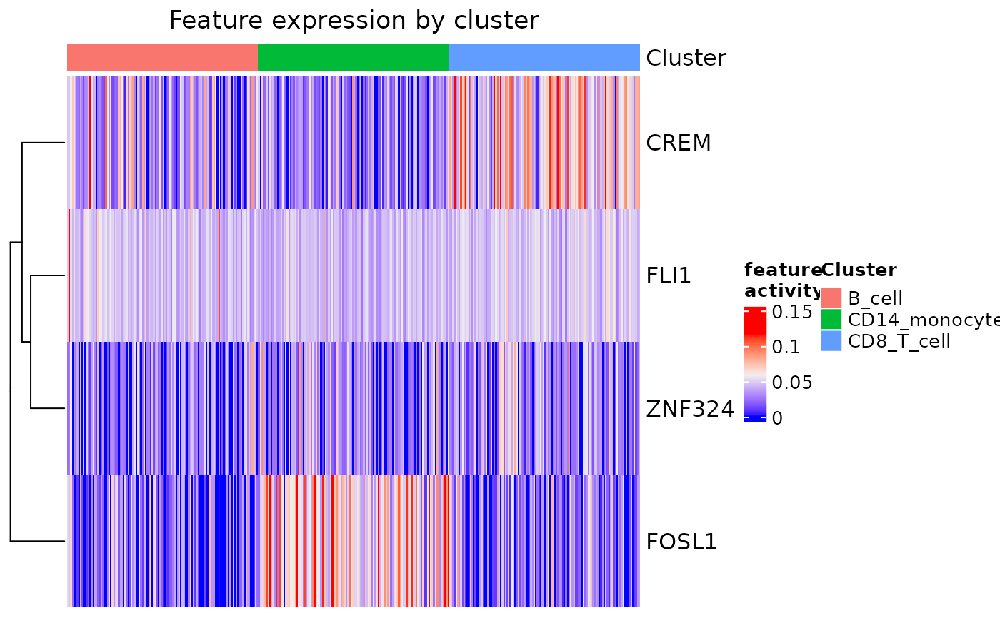
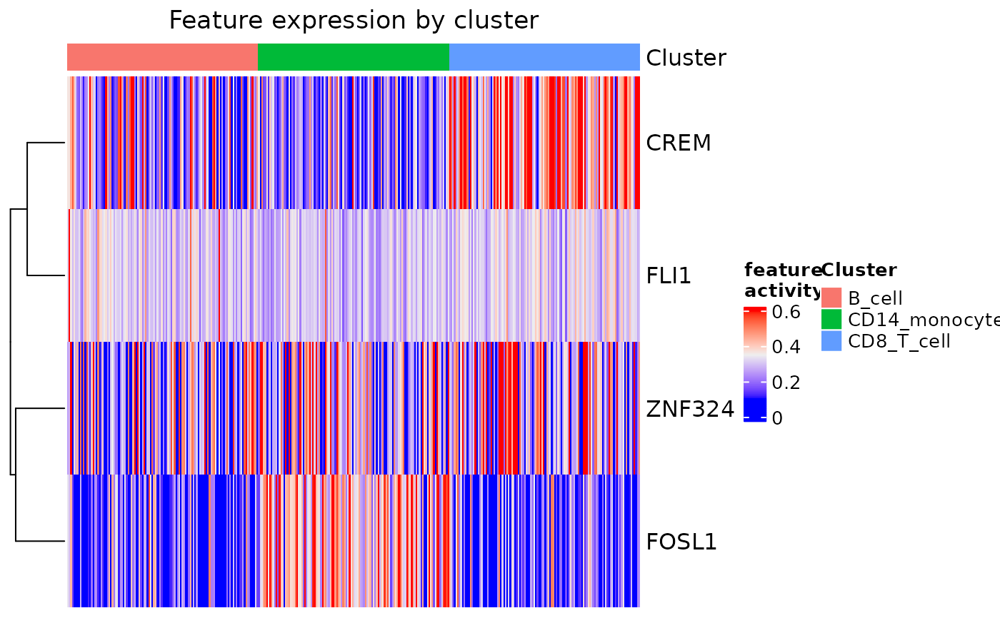

Creates a heatmap of transcription factor activation scores by cells grouped by cluster.
Usage
feat_heatmap(
dom,
feats = NULL,
bool = FALSE,
bool_thresh = 0.2,
title = TRUE,
norm = FALSE,
cols = NULL,
ann_cols = TRUE,
min_thresh = NULL,
max_thresh = NULL,
...
)Arguments
- dom
Domino object with network built (
build_domino())- feats
Either a vector of features to include in the heatmap or 'all' for all features. If left NULL then the features selected for the signaling network will be shown.
- bool
Boolean indicating whether the heatmap should be continuous or boolean. If boolean then bool_thresh will be used to determine how to define activity as positive or negative.
- bool_thresh
Numeric indicating the threshold separating 'on' or 'off' for feature activity if making a boolean heatmap.
- title
Either a string to use as the title or a boolean describing whether to include a title. In order to pass the 'main' parameter to
ComplexHeatmap::Heatmap()you must set title to FALSE.- norm
Boolean indicating whether or not to normalize the transcrption factors to their max value.
- cols
Named vector of colors to annotate cells by cluster color. Values are taken as colors and names as cluster. If left as NULL then default ggplot colors will be generated.
- ann_cols
Boolean indicating whether to include cell cluster as a column annotation. Colors can be defined with cols. If FALSE then custom annotations can be passed to
ComplexHeatmap::Heatmap().- min_thresh
Minimum threshold for color scaling if not a boolean heatmap
- max_thresh
Maximum threshold for color scaling if not a boolean heatmap
- ...
Other parameters to pass to
ComplexHeatmap::Heatmap(). Note that to use the 'main' parameter ofComplexHeatmap::Heatmap()you must set title = FALSE and to use 'annCol' or 'annColors' ann_cols must be FALSE.
Examples
#basic usage
example(build_domino, echo = FALSE)
#> Reading in and processing signaling database
#> Database provided from source: CellPhoneDB
#> Getting z_scores, clusters, and counts
#> Calculating feature enrichment by cluster
#> 1 of 3
#> 2 of 3
#> 3 of 3
#> Calculating correlations
#> 1 of 6
#> 2 of 6
#> 3 of 6
#> 4 of 6
#> 5 of 6
#> 6 of 6
#> Reading in and processing signaling database
#> Database provided from source: CellPhoneDB
#> Getting z_scores, clusters, and counts
#> Calculating correlations
#> 1 of 6
#> 2 of 6
#> 3 of 6
#> 4 of 6
#> 5 of 6
#> 6 of 6
feat_heatmap(pbmc_dom_built_tiny)

#using thresholds
feat_heatmap(
pbmc_dom_built_tiny, min_thresh = 0.1,
max_thresh = 0.6, norm = TRUE, bool = FALSE)
#> Warning: You are using norm with min_thresh and max_thresh. Note that values will be thresholded AFTER normalization.
